ABATEMENT PROCESSING
1. Receive Abatement file from County Clerk (Tanya Anthofer)
a. Excel Spreadsheet
b. Save in “O:Common drive”, “Abatements” folder
c. Delete all columns except for PIN and Abatement year
d. Delete row #1 headings and row after last PIN (if necessary)
e. Format column “A” as number 14 ‘0’
i. Review and correct PIN and date formatting
ii. Right justify columns
iii. Verify that PIN’s and Dates are aligned
f. Save as .xls file
g. Save same file as .txt file
2. Send .txt file to AS400 library and member
a. In “O:\Abatements” folder, open “Abatements.trf”
b. Change .txt file name and also library and member and hit “transfer data to ISeries”
c. Copy file to “DATAC” library, “ABATE400” file, “YNNN” (Y remains the same, NNNN reflects year, e.g. Y2013) (see screenshots below)
3. Run following queries:
a. ****NOTE . Change MEMBER years in RMABATE03, , RMABATE17
b. ****NOTE. Change OUTPUT MEMBER YEAR in RMABATE15 AND REPLACE FILE
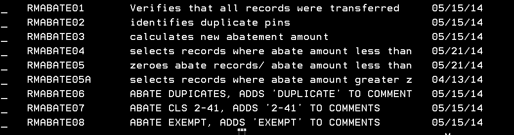
c. Delete extra pins
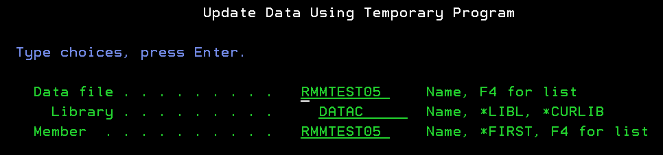
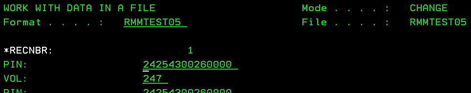
Delete “<field exit>” all fields
d. Run following queries:
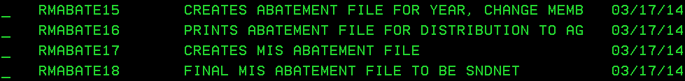
e. Distribute RMABATE16 report to
i. Secretary to the Board (BOR)
1. Two copies
ii. One for BOR
iii. The other for County Clerk
ii. Tanya Anthofer (4th floor, county clerk)
SNDNETF FILE
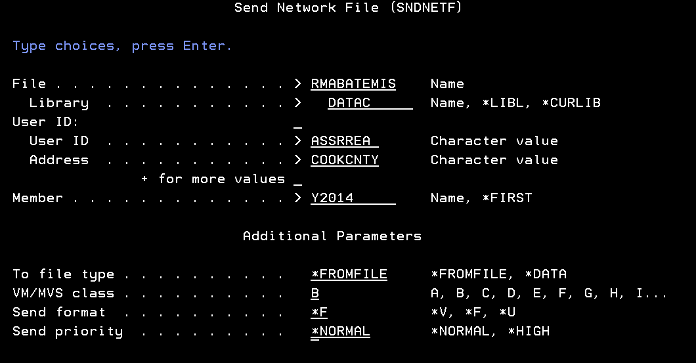
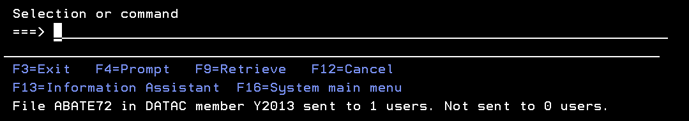
BOT WILL REQUEST FILE BELOW AFTER STEP 11 IN SF “Q” PROCESS:
ASREA22E (Located in APIN/assess00/asreajob) *** change to current tax year
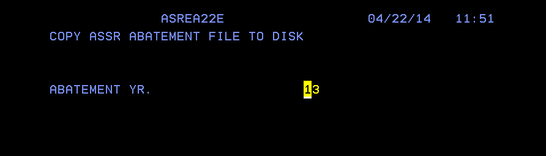
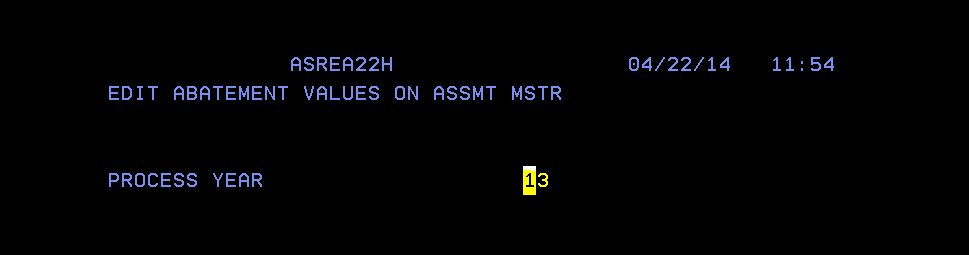
SCREENSHOTS
1a)
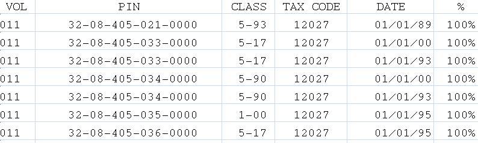
1b)
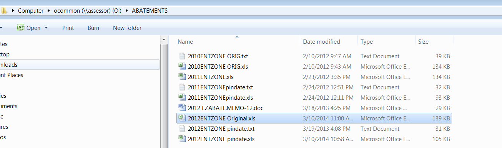
1c, 1d)
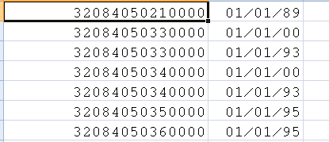
1e)
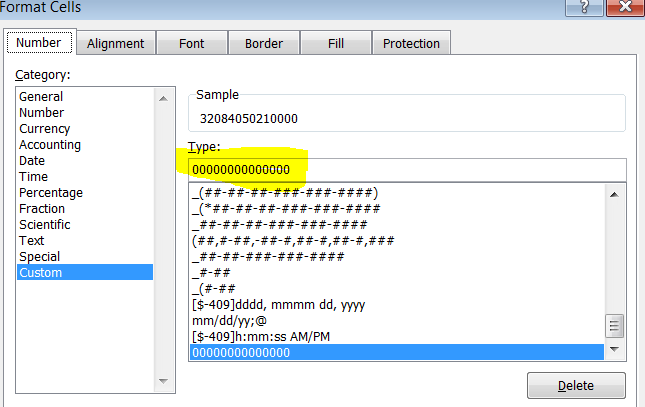
1f, 1g)
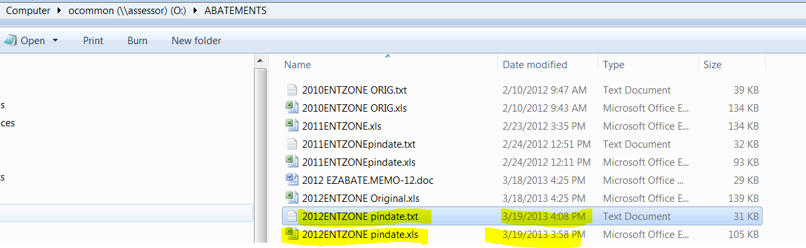
2a)
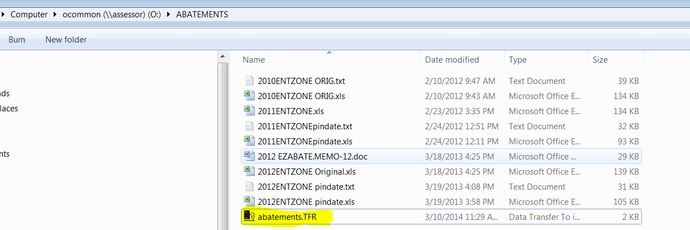
2b)
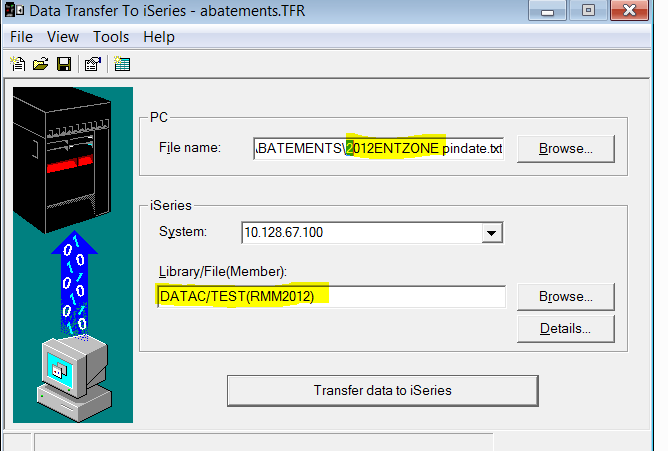
2c) On AS400 command line
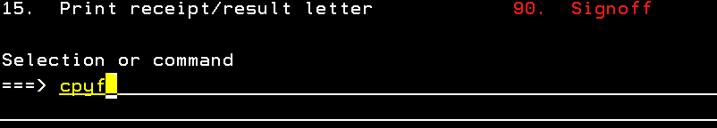
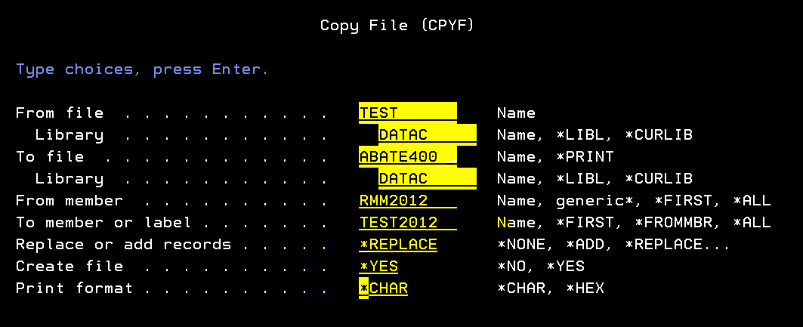
Hit <F10> for next screen
Page down to following screen:
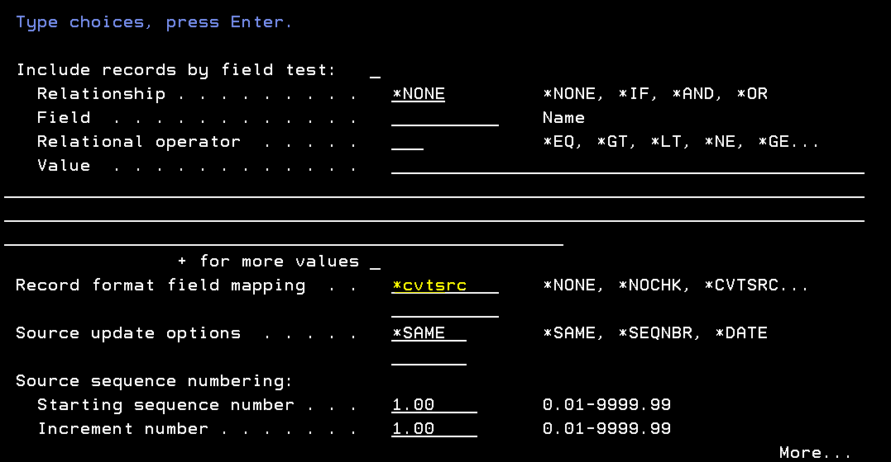
Enter “*cvtsrc”
Hit <Enter>
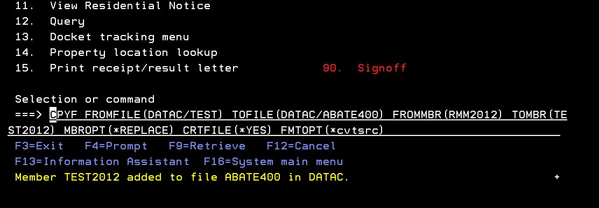